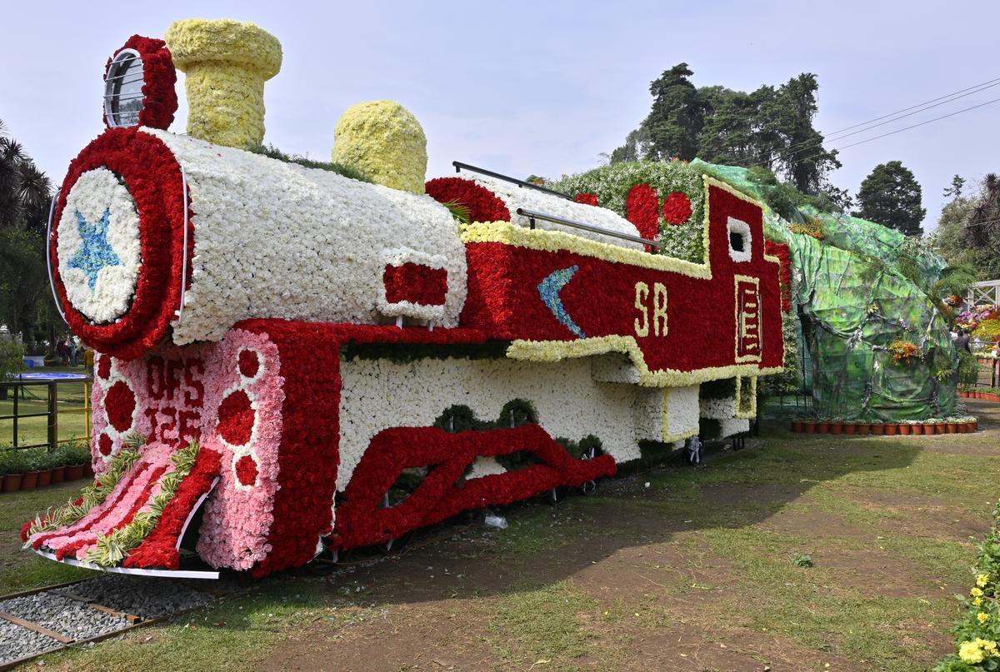
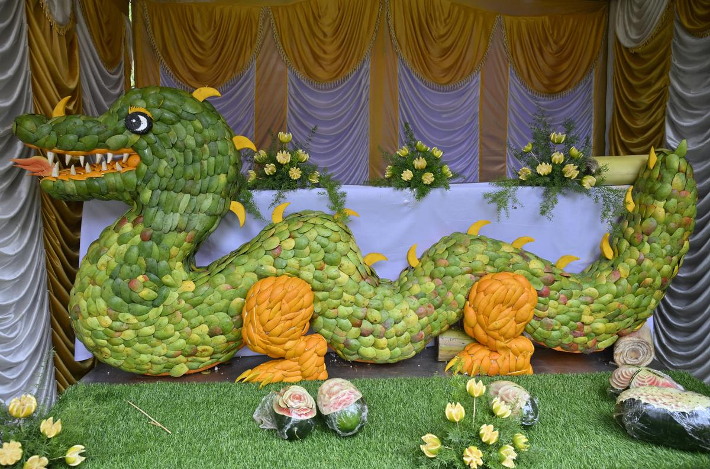
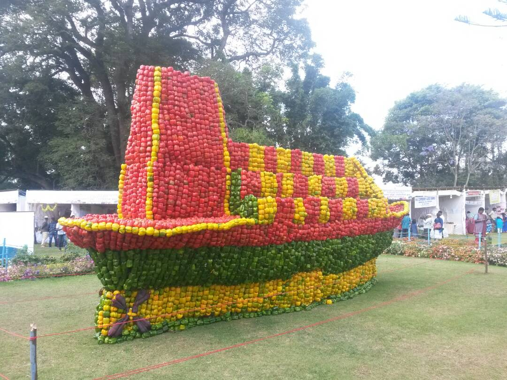
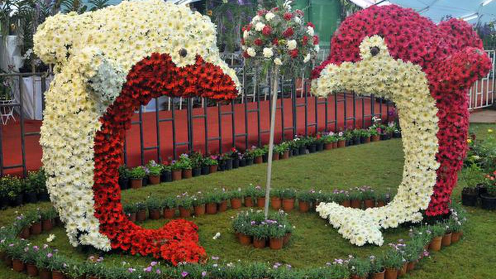
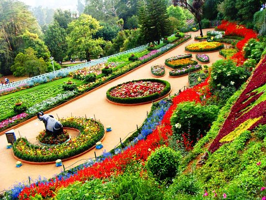
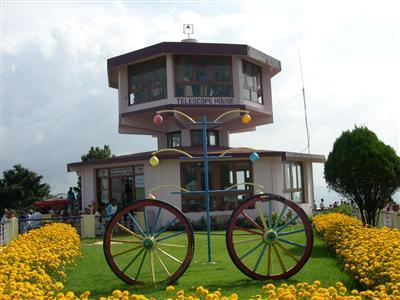
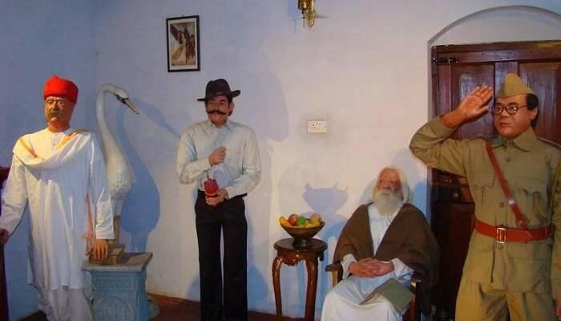

SUMMER FESTIVAL
The Summer Festival in Ooty is a significant annual event that attracts tourists and locals alike. It usually takes place in May and spans several days, featuring a variety of cultural, entertainment, and recreational activities.Various stalls are set up during the festival, selling local handicrafts, food, and souvenirs. It's a great opportunity to shop for unique items and sample local delicacies. Apart from the flower and vegetable shows, there are other horticultural displays that highlight the region's agricultural diversity.
|  | Held at the Government Botanical Gardens, the flower show is one of the main attractions. It showcases a spectacular array of flowers, including exotic and rare species. The centerpiece is often a grand floral arrangement or sculpture. |
|  | This event is organized at the Sim's Park in Coonoor and displays a wide variety of fruits, including unique and hybrid varieties. There are also creative fruit carvings and arrangements. |
|  | Held at the Nehru Park in Kotagiri, the vegetable show features an assortment of vegetables arranged in artistic displays. There are competitions and educational exhibits about vegetable farming and gardening. |
|  | This show takes place at the Government Rose Garden, one of the largest rose gardens in India. It features numerous varieties of roses, beautifully arranged in different themes and patterns. |
PLACES TO VISIT IN OOTY

PYKARA LAKE
A Serene Gem in Ooty's Emerald Embrace

BOTANICAL GARDEN
A heaven of horticulture delights

DODABETTA PEAK
The Crown Jewel of OOty's Horizon

STONE HOUSE
Historic Heaven in Ooty's Heart

Wax Museum
Where legends Come Alive

TOY TRAIN
A Charming Journey through the Nilgiris